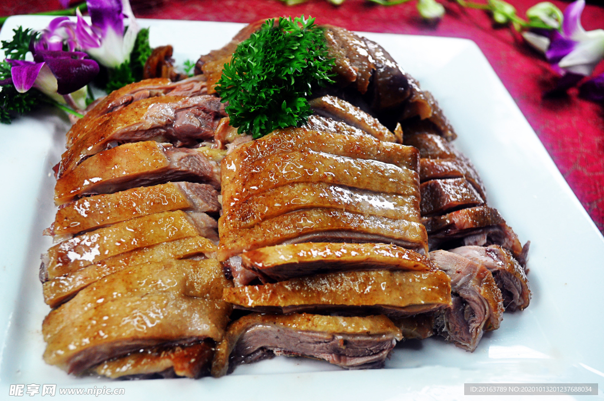
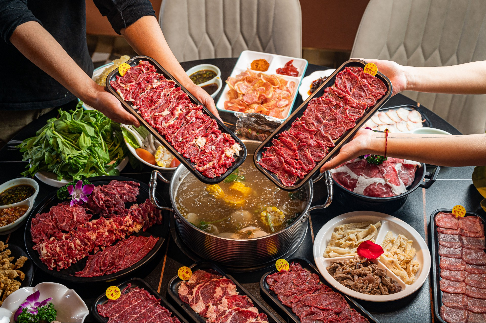
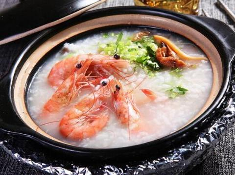

潮汕特色菜品
潮汕菜以海鲜和卤味为核心特色，菜品注重原汁原味，调味清淡却不失鲜香，以下是最具代表性的潮汕特色菜：

潮汕卤鹅
潮汕卤味的代表，选用澄海狮头鹅，用八角、桂皮、陈皮等多种香料熬制的老卤慢卤数小时。鹅肉鲜嫩入味，卤汁香浓，搭配蒜蓉醋食用，解腻又提鲜，是潮汕宴席的“硬菜”。

潮汕牛肉火锅
以新鲜黄牛肉为原料，现宰现切，不同部位（吊龙、五花趾、匙柄等）口感各异。锅底用牛骨清汤熬制，仅加姜片去腥，涮肉时间严格控制（3-8秒），搭配沙茶酱或芹菜粒，凸显牛肉的鲜嫩。

潮汕砂锅粥
用砂锅慢熬的咸粥，原料多为海鲜（虾、蟹、干贝）或肉类，米粒绵密软糯，汤汁浓稠鲜香。熬制时需不断搅拌，确保粥底顺滑，是潮汕人早餐和夜宵的热门选择。